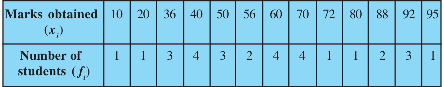
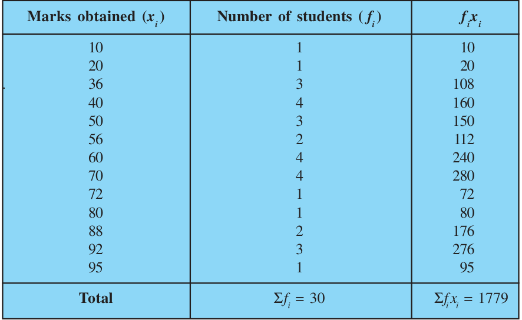
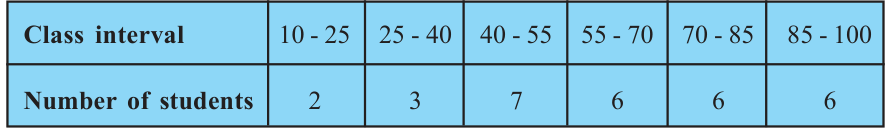
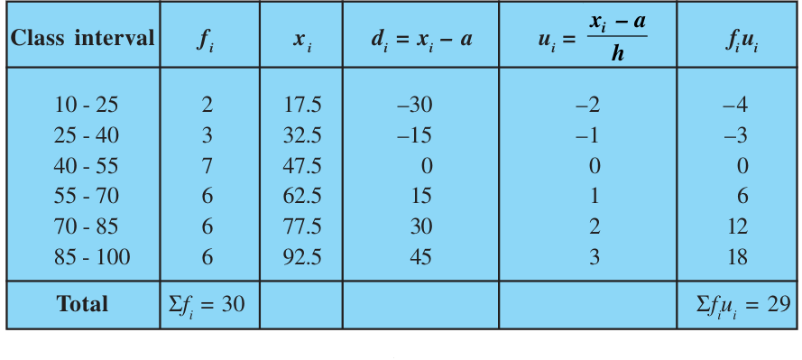
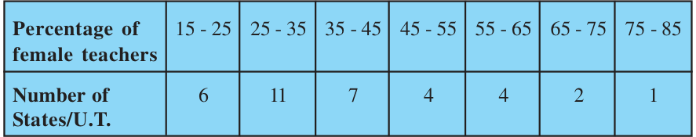
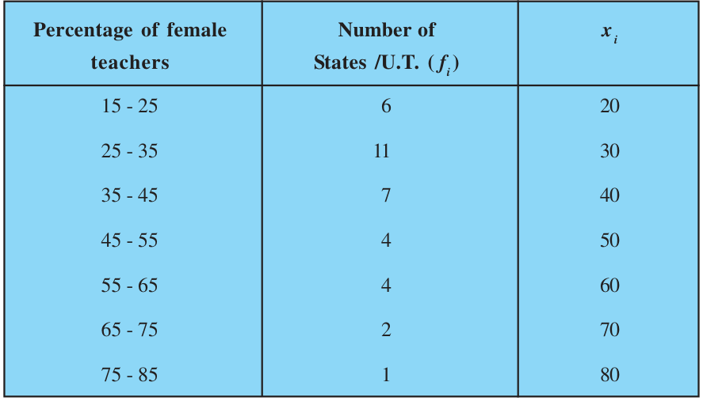
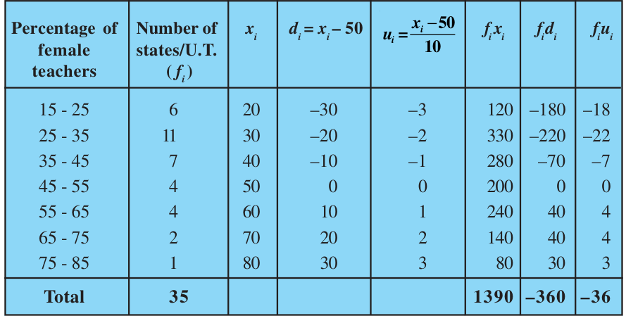
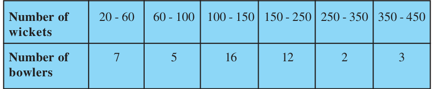
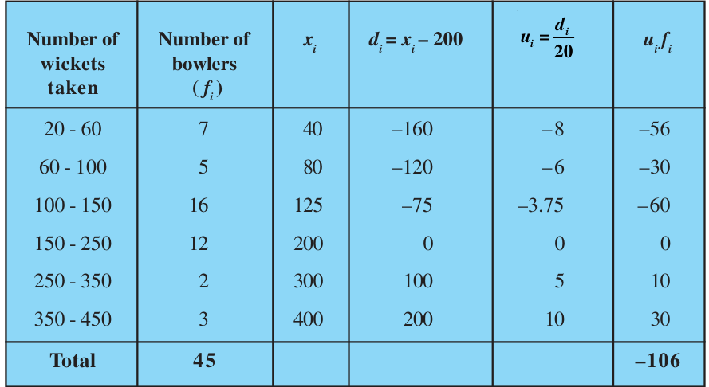

The mean (or average) of observations, as we know, is the sum of the values of all the observations divided by the total number of observations. From Class IX, recall that if x_{1}, x_{2},. . ., x_{n} are observations with respective frequencies f_{1}, f_{2}, . . ., f_{n}, then this means observation x_{1} occurs f_{1} times, x_{2} occurs f_{2} times, and so on. Now, the sum of the values of all the observations \(= f_{1}x_{1} + f_{2}x_{2} +\) . . . \(+ f_{n}x_{n}\), and the number of observations \(= f_{1} + f_{2} +\) . . . \(+ f_{n}\). So, the mean x of the data is given by
\(f_{1}x_{1} + f_{2}x_{2} + + f_{n}x_{n}\)
\(x =\)
\(f_{1} + f_{2} + + f_{n}\)
Recall that we can write this in short form by using the Greek letter Σ (capital sigma) which means summation. That is,
\(Σ^{n}\)
f_{i}x_{i}
\(x =\)
i=1
\(Σ^{n}\)
f_{i}
i=1
which, more briefly, is written as \(x = \frac{Σfixi}{Σf} _{i}\) , if it is understood that i varies from 1 to n.
Let us apply this formula to find the mean in the following example.
Example 1 : The marks obtained by 30 students of Class X of a certain school in a Mathematics paper consisting of 100 marks are presented in table below. Find the mean of the marks obtained by the students.

Solution: Recall that to find the mean marks, we require the product of each x_{i} with the corresponding frequency f_{i}. So, let us put them in a column as shown in Table 13.1.

Σ f_{i}x_{i}
Now, \(x =\) Σ \(f_{i} = \frac{1779}{30} = 59.3\)
Therefore, the mean marks obtained is 59.3.
In most of our real life situations, data is usually so large that to make a meaningful study it needs to be condensed as grouped data. So, we need to convert given ungrouped data into grouped data and devise some method to find its mean.
Let us convert the ungrouped data of Example 1 into grouped data by forming class-intervals of width, say 15. Remember that, while allocating frequencies to each class-interval, students falling in any upper class-limit would be considered in the next class, e.g., 4 students who have obtained 40 marks would be considered in the class- interval 40-55 and not in 25-40. With this convention in our mind, let us form a grouped frequency distribution table (see Table 13.2).

Now, for each class-interval, we require a point which would serve as the representative of the whole class. It is assumed that the frequency of each class- interval is centred around its mid-point. So the mid-point (or class mark) of each class can be chosen to represent the observations falling in the class. Recall that we find the mid-point of a class (or its class mark) by finding the average of its upper and lower limits. That is,
Upper class limit + Lower class limit Class mark \(= 2\)
With reference to Table 13.2, for the class 10-25, the class mark is \(\frac{10+25}{2}\) , i.e., 17.5. Similarly, we can find the class marks of the remaining class intervals. We put them in Table 13.3. These class marks serve as our x_{i}’s. Now, in general, for the ith class interval, we have the frequency f_{i} corresponding to the class mark x_{i}. We can now proceed to compute the mean in the same manner as in Example 1.
Table 13.3
Class interval Number of students ( f_{i}) Class mark (x_{i}) f_{i}x_{i}
\(10 - 25 2 17.5 35.0 25 - 40 3 32.5 97.5 40 - 55 7 47.5 332.5 55 - 70 6 62.5 375.0 70 - 85 6 77.5 465.0 85 - 100 6 92.5 555.0\)
Total Σ \(f_{i} = 30\) Σ \(f_{i}x_{i} = 1860.0\)
The sum of the values in the last column gives us Σ f_{i}x_{i}. So, the mean x of the given data is given by Σf_{i}x_{i}
\(x =\) Σ \(f_{i} = \frac{1860.0}{30} = 62\)
This new method of finding the mean is known as the Direct Method. We observe that Tables 13.1 and 13.3 are using the same data and employing the same formula for the calculation of the mean but the results obtained are different. Can you think why this is so, and which one is more accurate? The difference in the two values is because of the mid-point assumption in Table 13.3, 59.3 being the exact mean, while 62 an approximate mean. Sometimes when the numerical values of x_{i} and f_{i} are large, finding the product of x_{i} and f_{i} becomes tedious and time consuming. So, for such situations, let us think of a method of reducing these calculations. We can do nothing with the f_{i}’s, but we can change each x_{i} to a smaller number so that our calculations become easy. How do we do this? What about subtracting a fixed number from each of these x_{i}’s? Let us try this method. The first step is to choose one among the x_{i}’s as the assumed mean, and denote it by ‘a’. Also, to further reduce our calculation work, we may take ‘a’ to be that x_{i} which lies in the centre of x_{1}, x_{2}, . . ., x_{n}. So, we can choose \(a = 47.5\) or \(a = 62.5\). Let
us choose \(a = 47.5\).
The next step is to find the difference d_{i} between a and each of the x_{i}’s, that is, the deviation of ‘a’ from each of the x_{i}’s.
i.e., \(d_{i} = x_{i} - a = x_{i} - 47.5\)
The third step is to find the product of d_{i} with the corresponding f_{i}, and take the sum of all the f_{i}d_{i}’s. The calculations are shown in Table 13.4.
Table 13.4
Class interval Number of Class mark \(d_{i}= x_{i} - 47.5 f_{i}d_{i}\)
students ( f_{i}) (x_{i})
\(10 - 25 2 17.5 - 30 - 60 25 - 40 3 32.5 - 15 - 45 40 - 55 7 47.5 0 0 55 - 70 6 62.5 15 90 70 - 85 6 77.5 30 180 85 - 100 6 92.5 45 270\)
Total \(Σf_{i} = 30 Σf_{i}d_{i} = 435\)
Σf d_{i} _{i} So, from Table 13.4, the mean of the deviations, \(d = Σf_{i}\) .
Now, let us find the relation between d and x . Since in obtaining d, we subtracted ‘a’ from each x_{i}, so, in order to get the mean x , we need to add ‘a’ to \(\frac{i}{d}\) . This can be explained mathematically as:
Σf d_{i} _{i} Mean of deviations, \(d = Σf_{i}\)
So, \(d = \frac{fi(xia)}{Σf} _{i}\)
= Σfi - (f ai}{Σf} _{i}
\(= x - a \frac{fi}{Σf} _{i}\)
\(= x -\)
So, \(x = a + \frac{a}{d}\)
i.e., x = a + (f dii}{Σf} _{i}
Substituting the values of a, Σf_{i}d_{i} and Σf_{i} from Table 13.4, we get
\(x = 47.5 + \frac{435}{30} = 47.5 + 14.5 = 62\).
Therefore, the mean of the marks obtained by the students is 62. The method discussed above is called the Assumed Mean Method.
Activity 1 : From the Table 13.3 find the mean by taking each of x_{i} (i.e., 17.5, 32.5, and so on) as ‘a’. What do you observe? You will find that the mean determined in each case is the same, i.e., 62. (Why ?) So, we can say that the value of the mean obtained does not depend on the choice of ‘a’. Observe that in Table 13.4, the values in Column 4 are all multiples of 15. So, if we divide the values in the entire Column 4 by 15, we would get smaller numbers to multiply with f_{i}. (Here, 15 is the class size of each class interval.)
- So, let \(u_{i} = \frac{xia}{h}\) , where a is the assumed mean and h is the class size. Now, we calculate u_{i} in this way and continue as before (i.e., find f_{i}u_{i}and then Σf_{i}u_{i}). Taking \(h = 15\), let us form Table 13.5.
Table 13.5

Σf u Let = Σ Here, again let us find the relation between \(\frac{fi}{u}\) and x .
We have, \(u_{i} = \frac{xi-a}{h}\)
Therefore, \(u = Σf^{i} \frac{(xi-a)}{h} =\)
\(= \frac{1}{h} \frac{Σfixi}{Σf} _{i} - a \frac{Σfi}{Σf} _{i}\)
\(= \frac{1}{h}\) [x - a]
So, hu \(= x - a\)
i.e., \(x = a +\) hu
So, x = a + h (Σf uii}{Σf} _{i}
Now, substituting the values of a, h, Σf_{i}u_{i} and Σf_{i} from Table 14.5, we get
\(x = 47.5 + 15 \times \frac{29}{30} = 47.5 + 14.5 = 62\)
So, the mean marks obtained by a student is 62. The method discussed above is called the Step-deviation method. We note that :
- •the step-deviation method will be convenient to apply if all the d_{i}’s have a
common factor.
- •The mean obtained by all the three methods is the same.
- •The assumed mean method and step-deviation method are just simplified
forms of the direct method.
- •The formula \(x = a +\) hu still holds if a and h are not as given above, but are
any non-zero numbers such that \(u_{i} = \frac{xi-a}{h}\) . Let us apply these methods in another example.
Example 2 : The table below gives the percentage distribution of female teachers in the primary schools of rural areas of various states and union territories (U.T.) of India. Find the mean percentage of female teachers by all the three methods discussed in this section.

Source : Seventh All India School Education Survey conducted by NCERT
Solution : Let us find the class marks, x_{i}, of each class, and put them in a column (see Table 13.6):

Here we take \(a = 50\), \(h = 10\), then \(d_{i} = x_{i} - 50\) and \(= \frac{xi-50}{10}\) .
We now find di and ui and put them in Table 13.7.
Table 13.7

From the table above, we obtain \(Σf_{i} = 35\), \(Σf_{i}x_{i} = 1390\),
\(Σf_{i}d_{i} = - 360\), \(Σf_{i}u_{i} = - 36\).
Σf_{i}x_{i} Using the direct method, \(x = = = 39.71\)
\(Σf_{i} \frac{1390}{35}\)
Using the assumed mean method,
Σ \(x = a + \frac{f dii}{Σf} _{i} = 50 + \frac{( - 360)}{35} = 39.71\)
Using the step-deviation method,
\(x = a + Σf_{i} \times h = 50 + \frac{ - 36}{35} \times 10 = 39.71\)
Σf u_{i} _{i}
Therefore, the mean percentage of female teachers in the primary schools of rural areas is 39.71.
Remark : The result obtained by all the three methods is the same. So the choice of method to be used depends on the numerical values of x_{i} and f_{i}. If x_{i} and f_{i} are sufficiently small, then the direct method is an appropriate choice. If x_{i} and f_{i} are numerically large numbers, then we can go for the assumed mean method or step-deviation method. If the class sizes are unequal, and x_{i} are large numerically, we can still apply the step-deviation method by taking h to be a suitable divisor of all the d_{i}’s.
Example 3 : The distribution below shows the number of wickets taken by bowlers in one-day cricket matches. Find the mean number of wickets by choosing a suitable method. What does the mean signify?

Solution : Here, the class size varies, and the x_{i},s are large. Let us still apply the step- deviation method with \(a = 200\) and \(h = 20\). Then, we obtain the data as in Table 13.8.

So, \(u = \frac{ - 106}{45}\) ⋅ Therefore, \(x = 200 + 20 \frac{ - 106}{45} = 200 - 47.11 = 152.89\).
This tells us that, on an average, the number of wickets taken by these 45 bowlers in one-day cricket is 152.89.
Now, let us see how well you can apply the concepts discussed in this section!
Activity 2 :
Divide the students of your class into three groups and ask each group to do one of the following activities.
- 1.Collect the marks obtained by all the students of your class in Mathematics in the
latest examination conducted by your school. Form a grouped frequency distribution of the data obtained.
- 2.Collect the daily maximum temperatures recorded for a period of 30 days in your
city. Present this data as a grouped frequency table.
- 3.Measure the heights of all the students of your class (in cm) and form a grouped
frequency distribution table of this data.
After all the groups have collected the data and formed grouped frequency distribution tables, the groups should find the mean in each case by the method which